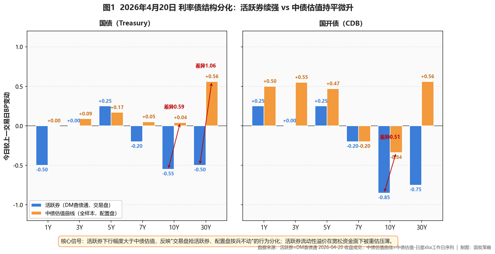
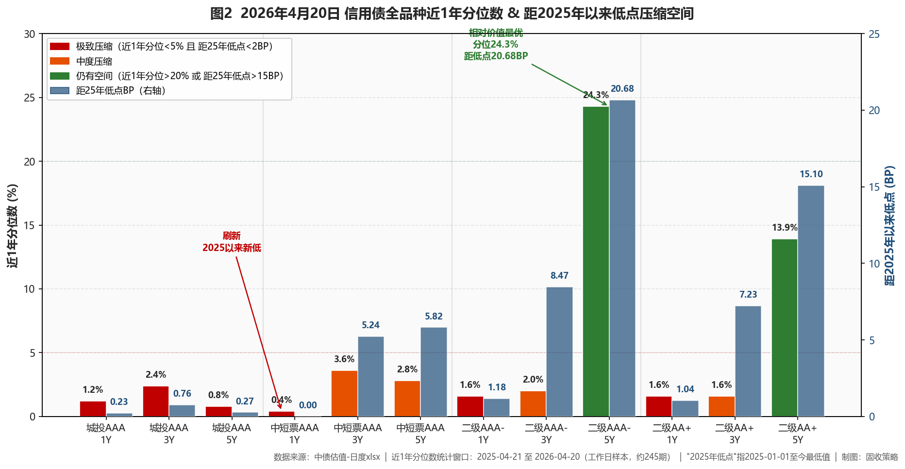

市场定性 长期震荡市 + 牛平末期 + 超长信用行情延续——A股放量反弹压制债市情绪，但长端信用仍具结构α，短端贴底、长端为王，机构正向久期要收益。
- ✅ 超长信用首选：城投AAA 20/30Y（分位41-46%/距低点37.83-39.88BP）+ 二级AAA- 10Y（-1.75BP领跌、分位31.5%/距低点30.35BP）+ 二级AA+ 10Y（分位31.1%/距低点28.24BP）；合计权重15-25%（30Y权重≤10%、逢回调分批）
- ✅ 中段品种5Y二级AAA-（分位24.3%/距低点20.68BP）+ 5Y二级AA+（分位13.9%/距低点15.10BP），合计25-30%
- ❌ 规避中短票AAA 1Y（破25年新低、分位0.4%）、城投AAA 1-5Y（分位<2.5%、距低点<1BP）——贴底接盘
- ❌ 不追长端利率债活跃券——活跃券与中债估值分化、配置盘未跟进，牛平末期赔率低
- ① 10Y国债触及1.75% / 30Y触及2.23%→央行合意区间边界、下行动能衰减，长端利率债减仓兑现、暂停超长信用新增买入（利率不动、信用必跟不上）
- ② R-DR利差走阔至 >15BP→流动性分层重现、加杠杆窗口关闭，去杠杆至≤105%、减仓中低等级久期品种
- ③ 理财规模降幅超季节性 + 信用债卖盘放量→赎回压力前兆，5Y以上二永减仓至核心底仓下限、切1-3Y高等级防御
- ④ 10Y中短票AAA-3Y利差跌破25BP（当前44.5BP、距2025低点10.5BP）→中长-中端价差耗尽、超长信用补涨逻辑透支，止盈10Y中短票、转配5-7Y二永中段品种
- ⑤ 30Y-10Y城投AAA利差跌破15BP（当前34.8BP、近1年分位98.6%→极宽位置、距2025低点4.2BP）→超长期限结构极度平坦、补涨完成，分批减仓30Y超长信用、向10Y以内集中
资金面
央行5亿7天逆回购等额对冲、零净投放，利率1.40%。DR001加权小幅下行、停留1.21%低位；X-repo银行隔夜1.2%供给充沛、非银质押隔夜1.35%-1.37%，R-DR利差极窄、分层几乎消失；1Y AAA同业存单1.4675%（-0.25BP）、3M 1.3750%（-1.50BP），短端降幅更大。本月季度缴税大月，但资金充裕、干扰预计有限。
利率债
活跃券与中债估值曲线结构分化显著——活跃券端10Y国债-0.55BP至1.7545%、30Y-0.50BP、10Y国开-0.85BP，交易盘追长端；但中债估值国债全曲线近乎持平（10Y仅+0.04BP）。国开曲线牛平（短端+0.5BP、10Y-0.34BP，10Y-1Y利差压缩0.85BP至43BP），10Y隐含税率（中债估值口径）仅7.47BP——配置盘未跟进，牛平末期追长端赔率低。

图1 利率债结构分化：活跃券续强 vs 中债估值持平微升
信用债（核心）
全品种利差压缩0.5-1.5BP但呈现"短端贴底、长端仍有空间"的期限分化：短中端（中短票AAA 1Y破25年新低/分位0.4%、城投AAA 1-5Y分位<2.5%）已极致贴底；🎯 长端价值洼地明显——城投AAA 20/30Y分位46.2%/41.4%/距低点37.83-39.88BP、30Y领跌-1.97BP；二级AAA- 10Y今日-1.75BP、分位31.5%/距低点30.35BP；二级AA+ 10Y分位31.1%/距低点28.24BP；中段5Y二级AAA-分位24.3%仍有20BP空间。理财31.9万亿(-1.38万亿)但增配债券，机构正向长端要收益。

图2 信用债全品种近1年分位数 & 距2025年以来低点压缩空间
策略矩阵
一、公开市场与资金面
央行4月20日以固定利率、数量招标方式开展5亿元7天逆回购操作对冲等量到期，零净投放、操作利率维持1.40%。银行间资金面延续十分宽松格局，DR001加权平均小幅下行并停留于1.21%低位。匿名点击系统（X-repo）上，银行隔夜报价低至1.2%供给充沛、非银机构质押存单/信用债融入隔夜报价基本停留在1.35%-1.37%区间，R-DR利差极窄、流动性分层几乎消失——这是杠杆策略可持续的直接支撑。
存单方面，1Y AAA同业存单到期收益率收于1.4675%（-0.25BP）、3M存单1.3750%（-1.50BP），短端存单下行幅度更大，银行短期负债成本继续边际改善、一级供给压力可控。税期即将走款、本月为季度缴税大月，但考虑当前资金面充裕程度，预计税期总体干扰仍有限。一级市场，农发行1Y/3Y/10Y金融债中标分别为1.2872%/1.4024%/1.8169%，全场倍数高达9.92/3.24/6.66，短端认购热度极高，反映配置盘在宽松资金面下积极承接供给。
二、利率债与债市总览
今日利率债最突出的特征是活跃券与中债估值曲线的结构分化。活跃券端，10年期国债"26附息国债05"下行0.55BP至1.7545%、30年期"26附息国债02"下行0.50BP至2.2530%、10年期国开"25国开20"下行0.85BP至1.8585%，10Y国债逼近1.75%关口，交易盘在长端活跃券上显著加码。但同日中债估值曲线口径下，国债全曲线近乎持平、仅30Y小幅走高0.56BP——长端活跃券单日下行0.5BP以上并未带动非活跃老券同步回暖，交易盘抢活跃券、配置盘按兵不动，活跃券的流动性溢价在宽松资金面下被重估压薄。
曲线形态层面，国债曲线几乎整体平移（10Y-1Y期限利差维持60BP附近）；国开曲线则呈现明显牛平——短端1Y/3Y/5Y普遍+0.5BP、长端10Y-0.34BP，10Y-1Y国开期限利差单日压缩约0.85BP至43BP。中债估值口径10Y国开-国债隐含税率仅7.47BP（活跃券口径10.40BP），国开相对国债凸性溢价已压至极薄水平。信用策略复盘中，"牛平→中长久期占优"的传统规律需结合阶段识别——长端分位数已极低、配置盘未跟进、期货涨幅弱于现券，这些都是"牛平末期"的典型信号，追长端等同于在末端接盘。
驱动层面：现券强势的核心支撑仍是资金面持续充沛；但一季度经济数据显示企稳迹象、LPR连续第11个月持稳，央行短期进一步宽松紧迫性不高。市场本周重点关注政治局会议。
图1 利率债结构分化——活跃券 vs 中债估值（2026-04-20 BP变动）
三、信用债市场
全品种利差压缩0.5-1.5BP但呈现"短端贴底、长端仍有空间"的显著期限分化——短中端已极致压缩：中短票AAA 1Y破25年新低（分位0.4%）、城投AAA 1-5Y分位均<2.5%（5Y仅0.8%/距低点0.27BP）、中短票AAA 3-5Y分位<4%——在绝对价值极值位继续增持，风险收益比已严重恶化。
🎯 长端信用是今日真正的价值洼地——城投AAA 20/30Y今日+0.19/-1.97BP、近1年分位46.2%/41.4%、距2025年以来低点37.83/39.88BP，30Y单日领跌长端信用；二级资本债AAA- 10Y今日-1.75BP（信用板块领跌）、分位31.5%/距低点30.35BP，二级AA+ 10Y分位31.1%/距低点28.24BP同样具吸引力；中短票AAA 7Y分位21.1%/距低点11.82BP。按超长信用行情框架，当前处于"利率震荡+非银扩张（理财增配债券）+资产荒演绎中期"三重共振窗口——必要条件完全满足，长端品种α相对中短端具有显著的赔率优势。
中段品种亦有空间——5Y 二级资本债AAA-（分位24.3%/距低点20.68BP）+ 5Y 二级AA+（分位13.9%/距低点15.10BP）均显著优于同期限城投AAA与中短票AAA，中段信用中仅二级资本债系列仍有10-15BP压缩空间；AA+ 5Y今日-1.41BP、单日利差压缩1.58BP，下沉收益显现；活跃个券"26工行二级资本债01BC"、"24建二级资本债01B"均小幅下行与曲线数据印证。
【止盈信号监测·本周xlsx实测】按超长信用止盈框架，本日报可每日重算以下两条实测信号：①10Y中短票AAA-3Y利差≤25BP（当前44.5BP、距2025低点10.5BP，未触发） ②30Y-10Y城投AAA利差≤15BP（当前34.8BP、近1年分位98.6%极宽位置、距2025低点4.2BP，未触发）——任一触发建议向10Y以内配置型品种集中、减仓20/30Y超长。
【理财行为与保险视角】一季度末理财31.9万亿（环比-1.38万亿）但资产端明显增配债券，机构正在向长端扩散。保险视角：30Y-10Y国债期限利差49BP显著高于25BP的险资增配经验阈值，超长端是险资负债驱动下的配置窗口；偿二代二期过渡期2025年底结束后，二级资本债基础因子高于永续债，对偿付能力承压的中小寿险而言，5Y永续AAA-可作为5Y二级资本债AAA-的替代/补充品种（需结合IFRS9综合评估）。
图2 信用债全品种近1年分位数 & 距2025年以来低点压缩空间